차량이 없어도 시작할 수 있나요?
자차를 추천하지만, 보증금 없이 임대차량으로도 가능합니다. 개인 신용과 관계없이 상담 가능합니다.
일부 센터의 임대 TO에 한하며 차량 상황과 센터별 조건에 따라 달라질 수 있습니다.
쿠팡 생수배송 · 전국 기사 모집
잘 버는 사례가 있는지, 왜 그만큼 벌 수 있는지.
정산 내역과 수익구조부터 확인하세요.
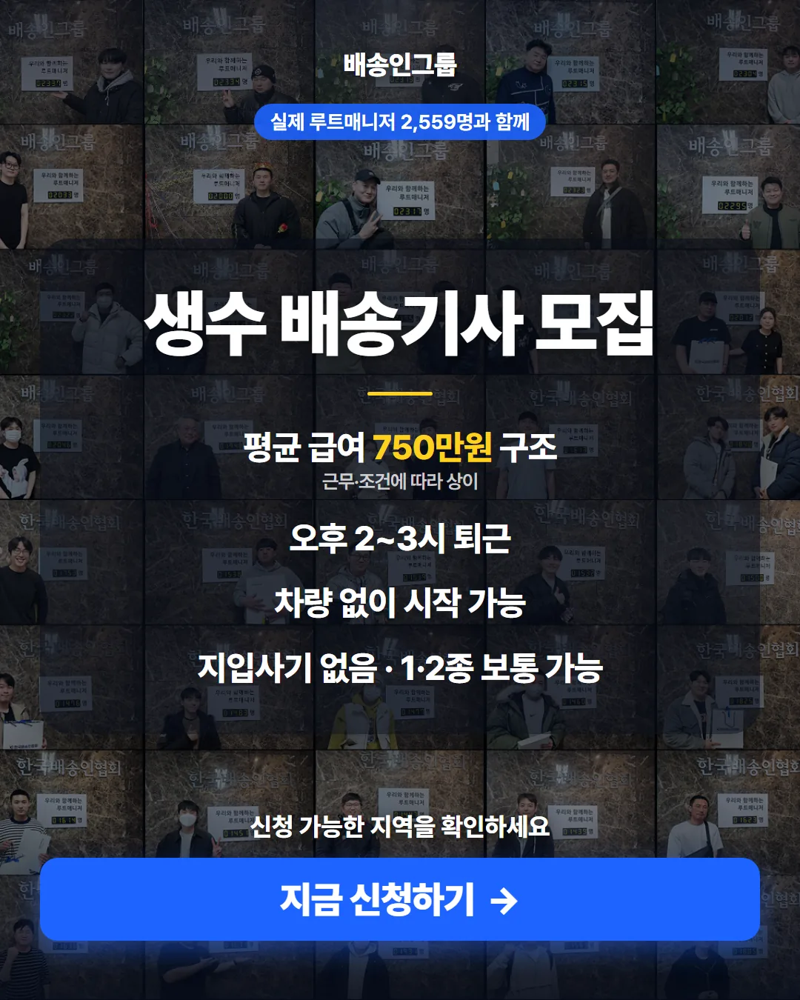
내 지역 배정 가능 여부 확인하기 →약 1분 소요 · 지역별 모집 여부와 조건은 달라질 수 있습니다.
말이 아니라 정산서로
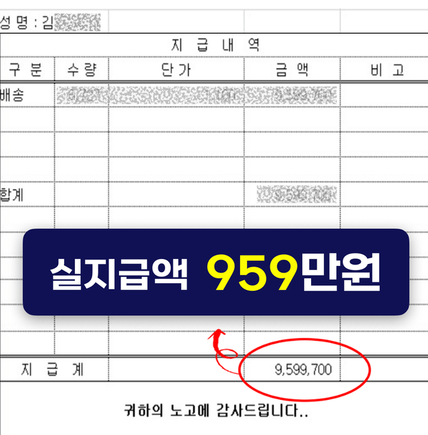
실제 기사님의 정산자료이며 개인정보는 가렸습니다. 급여는 지역·물량·근무일수·숙련도와 비용에 따라 달라집니다.
반복해서 확인되는 실제 사례
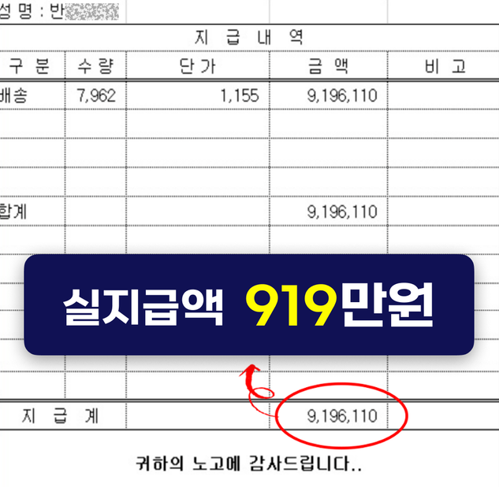
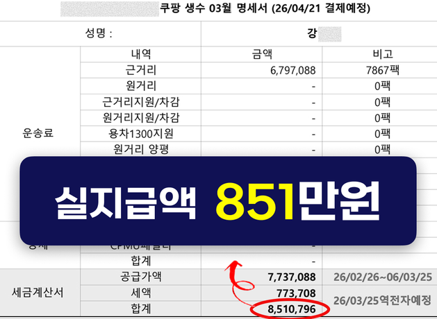
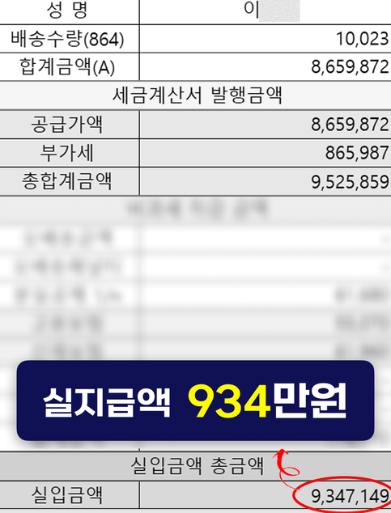
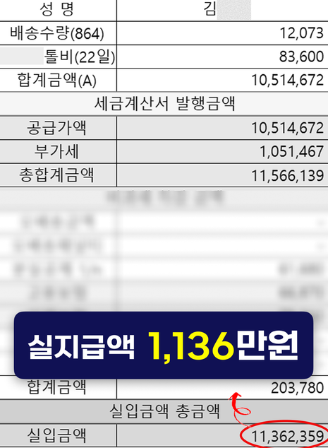
일부 기사님의 실제 사례입니다. 모든 기사님에게 동일한 결과가 보장되는 것은 아닙니다.
왜 높은 매출이 가능한가
생수배송은 한 배송지에 여러 팩을 전달하는 묶음 배송입니다. 더 중요한 건 배송비가 배송지 한 곳당이 아니라 배송한 팩마다 계산된다는 점입니다.
일반 가정도 한 배송지에 여러 팩이 함께 주문됩니다.
매장·회사·사무실은 한 장소에 대량 주문이 발생하기도 합니다.
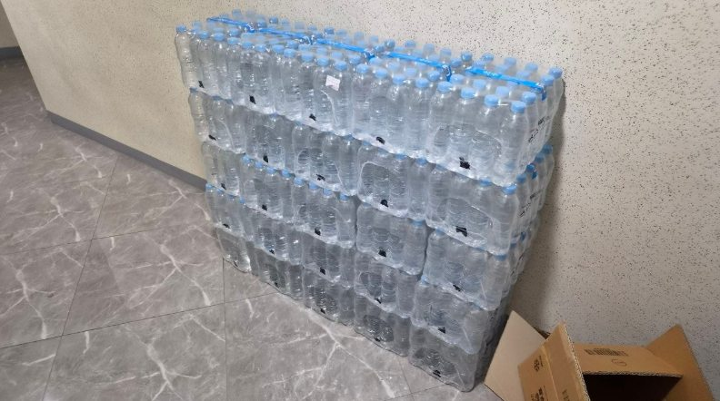
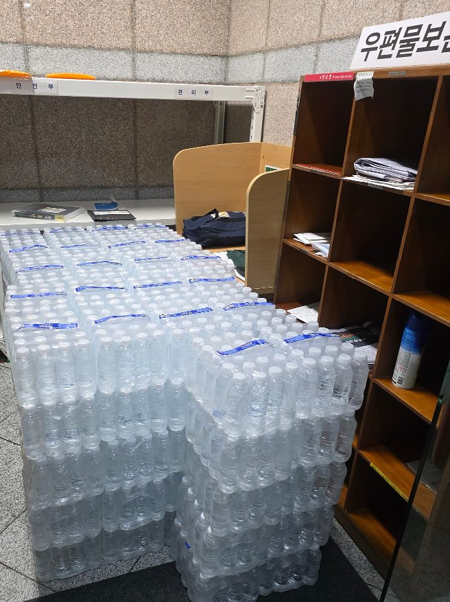
배송인그룹 내부 보유 현장 사진이며, 실제 주문량은 배송지·지역·시점에 따라 달라집니다.
팩당 단가와 묶음 물량은 센터·배송지·지역·주문에 따라 달라집니다.
물량의 기반
활성 고객 수는 쿠팡 공식 실적자료, 센터 현황은 배송인그룹 TO탭 2026년 8월 24일 기준입니다. 센터와 모집 TO는 수시로 변동됩니다.
시작 전 가장 궁금한 질문
일부 센터의 임대 TO에 한하며 차량 상황과 센터별 조건에 따라 달라질 수 있습니다.
실제 배정은 현재 모집 중인 센터와 TO에 따라 달라질 수 있습니다.
이런 분들이라면 가능합니다
무거운 생수를 반복적으로 옮기는 신체 활동에 무리가 없어야 합니다.
일정한 근무일수를 지키는 것이 수입의 기본입니다.
센터와 차량 조건에 따라 실제 운행 가능 여부를 확인합니다.
동선과 적재가 익숙해질수록 처리 속도가 달라집니다.
광고용으로 만든 후기가 아닙니다
처음 시작한 기사부터 오랫동안 배송한 기사까지, 배송인그룹 카페에 직접 남긴 생수배송 게시글입니다.
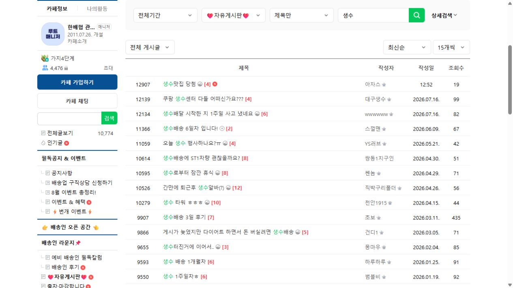
실제 카페 게시판게시물 제목·작성일·조회수는 실제 게시판 화면이며 작성자 정보는 개인정보 보호를 위해 가렸습니다.
믿을 수 있는 운영 조직
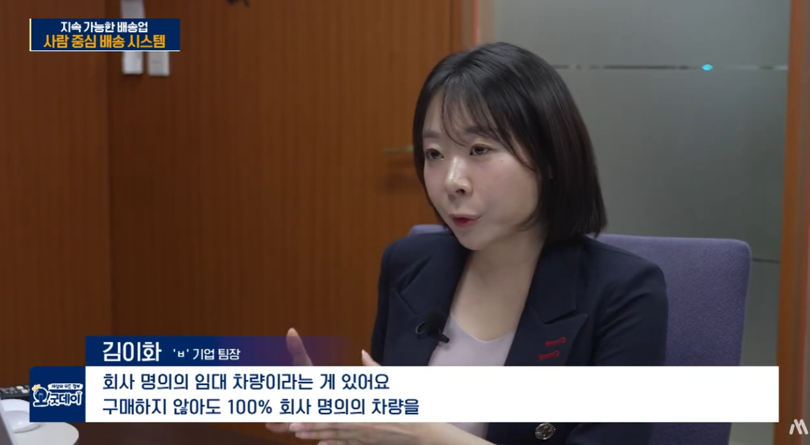
SBS 방송 출연
KBS 1라디오 출연
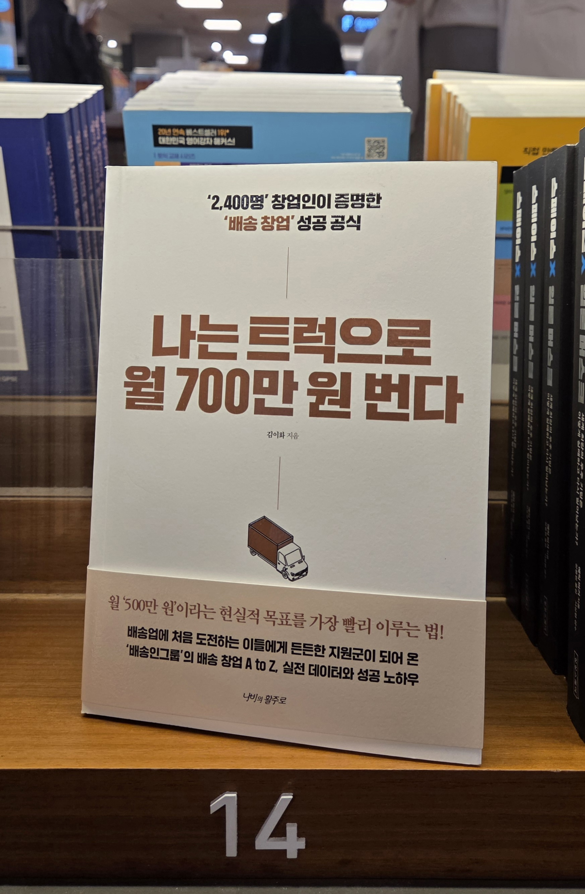
배송업 실전 경험을 담은 저서
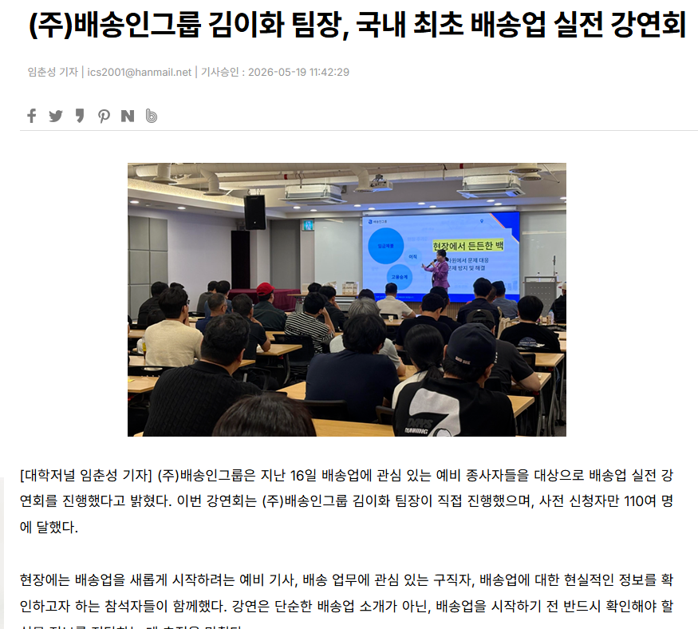
배송업 실전 강연·교육
신청 후 진행 절차
아래 내용을 남기면 담당자가
가까운 센터와 현재 모집 조건을 안내합니다.
평균 급여는 내부 운영자료에 따른 구조 설명이며 개인별 결과를 보장하지 않습니다. 실제 수입·퇴근시간·배정은 지역, 센터, 물량, 근무일수, 숙련도, 차량과 비용에 따라 달라질 수 있습니다.